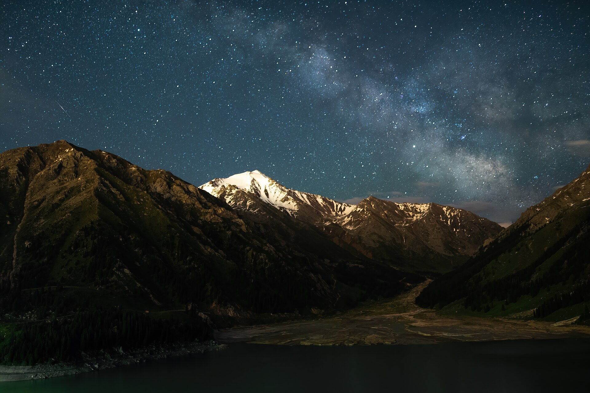
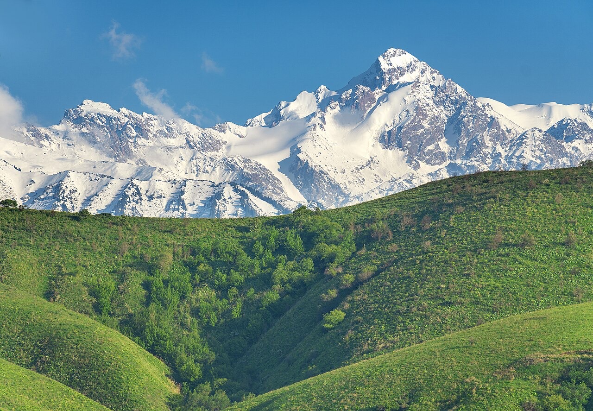
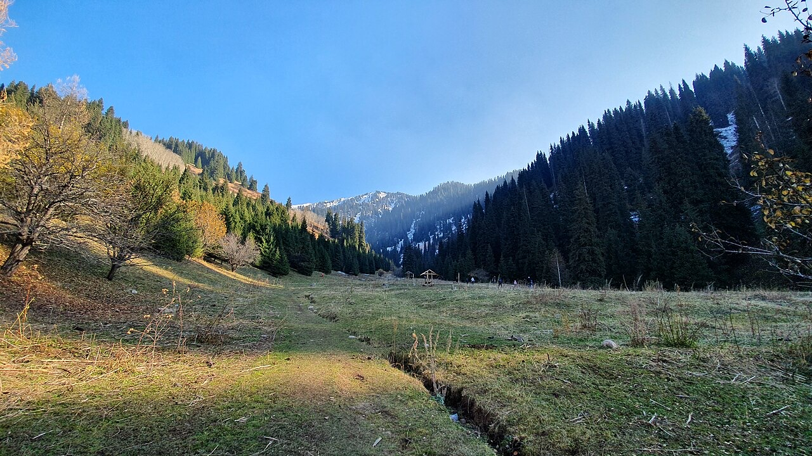
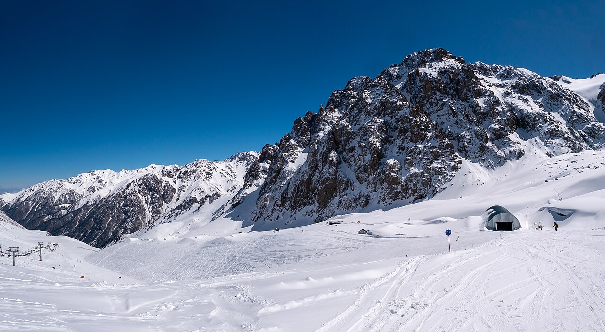
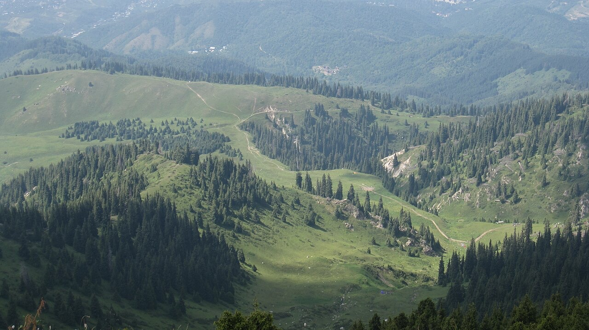

Галерея
Места, куда мы водим группы, — от лугов Кок-Жайляу до перевала Талгар.





Фото с маршрутов
Листайте кнопками или стрелками на клавиатуре.
Горы в разные сезоны
Мы ходим в горы круглый год.
-
Март–май
Весна
Цветут тюльпаны и подснежники, на вершинах ещё снег.
-
Июнь–август
Лето
Высокие маршруты, озёра и ночёвки под звёздами.
-
Сентябрь–ноябрь
Осень
Золотые склоны и самая чистая погода для фото.
-
Декабрь–февраль
Зима
Ходим на снегоступах по заснеженному лесу, на привалах пьём горячий чай.
Фотографии
Все снимки на сайте взяты с Wikimedia Commons.
- БАО с перевала (главная) — BitLord, CC BY-SA 4.0
- Бутаковское ущелье весной (главная), Бутаковка осенью — Timas38, CC BY-SA 4.0
- Тропа на Кок-Жайляу — Roman Check, CC BY-SA 4.0
- Тропа к БАО — Nessi Gileva, CC0
- Вершина Фурманова — Nikita Mikhailovskiy, CC BY-SA 4.0
- Млечный путь над БАО — Нуржан Казбеков, CC BY-SA 4.0
- Пик Комсомола — Dots foto, CC BY-SA 4.0
- Луга Кок-Жайляу — Soorette salike, CC BY-SA 4.0
- Перевал Талгар — Matti Blume, CC BY-SA 4.0